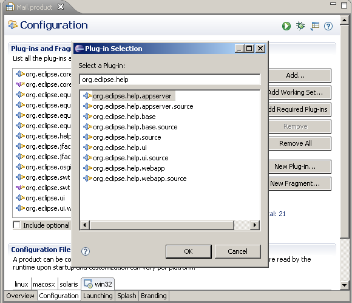
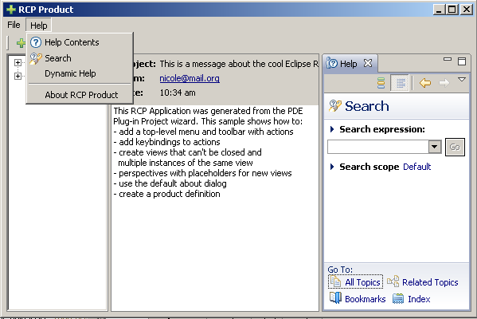

Configuring your RCP product to use the help system is a two step process: add the required help system plug-in dependencies to the product; and update the code (the menu bar for example) to display actions to start the help.
To add dependency plug-ins, open the product configuration editor (.product) and add the following plug-ins under Plug-ins and Fragments of the Configuration tab (see Figure 6.1):
* org.eclipse.help.appserver
* org.eclipse.help.base
* org.eclipse.help.ui
* org.eclipse.help.webapp
Tip To add all the required dependencies, check Include optional dependencies when computing required plug-ins and then click Add Required Plug-ins. This will ensure all required plug-ins are included. Missing dependencies will cause the help system to fail at startup.

Figure 6.1: Product configuration editor showing help system plug-ins.
The product should include actions to start the help from the main menu. In the fragment below we show the changes required to the ActionBarAdvisor class from the plug-in product to add the Eclipse factory actions for the help system:
public class ApplicationActionBarAdvisor extends ActionBarAdvisor {
// ...
// Help actions
private IWorkbenchAction showHelpAction;
private IWorkbenchAction searchHelpAction;
private IWorkbenchAction dynamicHelpAction;
protected void makeActions(final IWorkbenchWindow window) {
// ...
// Help Contents
showHelpAction = ActionFactory.HELP_CONTENTS.create(window);
register(showHelpAction);
// Help Search
searchHelpAction = ActionFactory.HELP_SEARCH.create(window);
register(searchHelpAction);
// Dynamic Help
dynamicHelpAction = ActionFactory.DYNAMIC_HELP.create(window);
register(dynamicHelpAction);
}
protected void fillMenuBar(IMenuManager menuBar) {
// ...
MenuManager helpMenu = new MenuManager("&Help",
IWorkbenchActionConstants.M_HELP);
// Help menu options
helpMenu.add(showHelpAction);
helpMenu.add(searchHelpAction);
helpMenu.add(dynamicHelpAction);
helpMenu.add(new Separator());
// ...
}
}
The class org.eclipse.ui.actions.ActionFactory gives access to standard actions provided by the workbench. There are three factory actions for the help system:
* HELP_CONTENTS: This action opens the help contents on a separate window.
* HELP_SEARCH: This action opens the help keyword search as a view within the product's main window.
* DYNAMIC_HELP: This action opens the dynamic help within a view. Dynamic help can change automatically as the user selects a different UI widget. This happens without forcing the user to re-press F1.
The help menu actions and help view are shown in figure 6.2.

Figure 6.2: RCP Mail template showing standard help actions and help view.